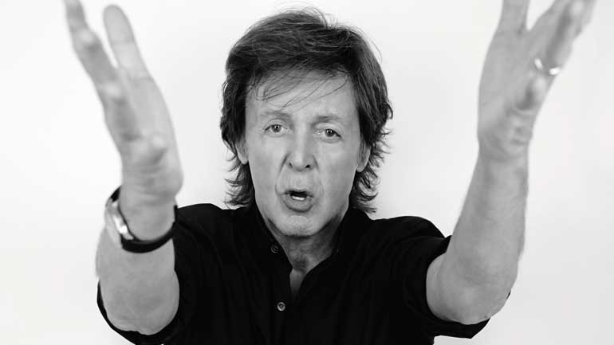
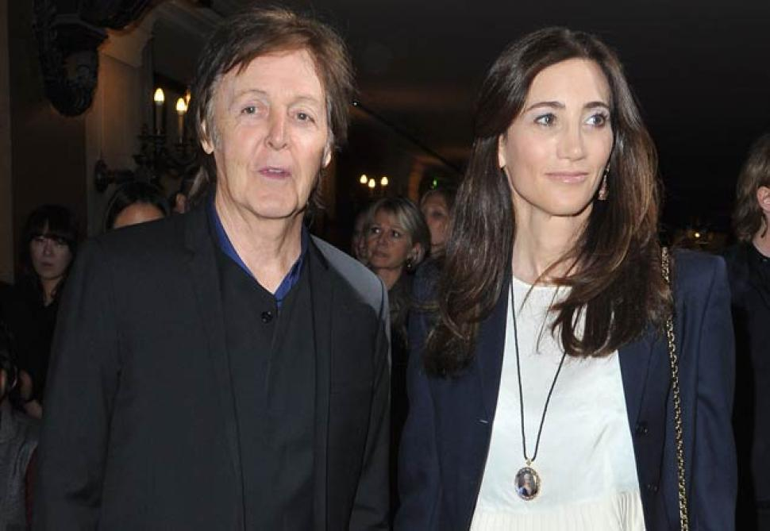
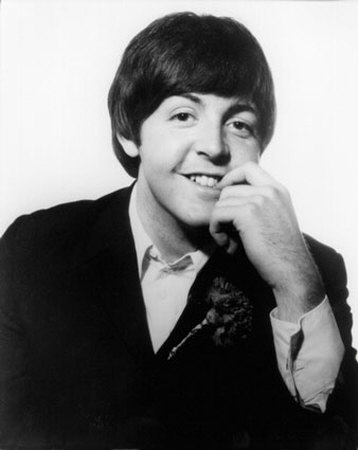

The Beatles

Home |
John Lennon |
George Harrison |
Ringo Starr |
Paul McCartney |
Discography |
Other Beatles members |
Discography Selections
Paul McCartney



-
Sir James Paul McCartney was born on June 18, 1942, in Liverpool,
England, to Mary and James McCartney. His mother was a maternity
nurse, and his father a cotton salesman and jazz pianist with a
local band. The young McCartney was raised in a traditional
working-class family, much the same as his future fellow Beatles
Ringo Starr and George Harrison. Tragically, when McCartney was
only 14 years old, his mother died of complications after a
mastectomy. His future bandmate, John Lennon, also lost his mother
at a young age—a connection that McCartney would later point to
as the start of a close bond between the two musicians."
-
Encouraged by his father to try out multiple musical instruments,
Paul McCartney began his lifelong love affair with music at an
early age. Though he took formal music lessons as a boy, the
future star preferred to learn by ear, teaching himself the
Spanish guitar, trumpet and piano. In 1957, the teenaged musician
met John Lennon at a church festival where both young men were
performing. Sensing an early affinity, McCartney joined Lennon's
band, the Quarrymen. The two quickly became the group's songwriters,
ushering it through many name changes and a few personnel changes
as well.
-
By 1960, the group had settled on a new moniker, the Beatles, and
George Harrison, Stuart Sutcliffe and Pete Best rounded out the
group. The soon-to-be legendary "mod squad" started out in the
1960s in Hamburg, Germany, spending two years playing various
nightclubs there. Sutcliffe soon left the band, leaving McCartney
to pick up the slack as the group's bass player. While in Hamburg,
the Beatles recorded their first tracks, garnering the attention
of Brian Epstein, who quickly signed on as the band's manager.
It wasn't long before the Beatles headed back to their home country
and began working their way into the popular consciousness there.
And Best's replacement by drummer Ringo Starr only helped the group
gain steam.
-
In 1966, the Beatles stopped touring, giving their last concert in
August at San Francisco's Candlestick Park. They continued to record
together, taking their music in new directions. They created one of
rock's first concept albums with Sgt. Pepper's Lonely Hearts Club
Band (1967), which was meant to be listened to in its entirety.
Other commercial and critical successes, included The Beatles
(often referred to as The White Album) (1968), to which Starr
contributed the track "Don't Pass Me By."
-
The Beatles disbanded in 1970, breaking fans' hearts worldwide.
However, McCartney had no intention of dropping out of the public
eye. He was the first of the Beatles to release a solo album
(McCartney, 1970), and though critics' reactions were mixed,
the album was a hit with the public. Encouraged, McCartney went
on to form Wings, a band that would remain popular throughout
the '70s, winning two Grammy Awards and churning out multiple
hit singles.
-
Tragedy struck in 1998, when McCartney's wife of 29 years, Linda
McCartney, died after a long battle with cancer. Four years later,
the musician married Heather Mills, a former model and
anti-landmine activist. They welcomed a daughter, Beatrice
, in 2003. Amid much press scrutiny and intense animosity,
McCartney and Mills parted ways in 2006. He married for the
third time, to New York businesswoman Nancy Shevell, in October
2011, in London.
Quoted by Paul McCartney:
"In the end, the love you take is equal to the love you make."
Home |
John Lennon |
George Harrison |
Ringo Starr